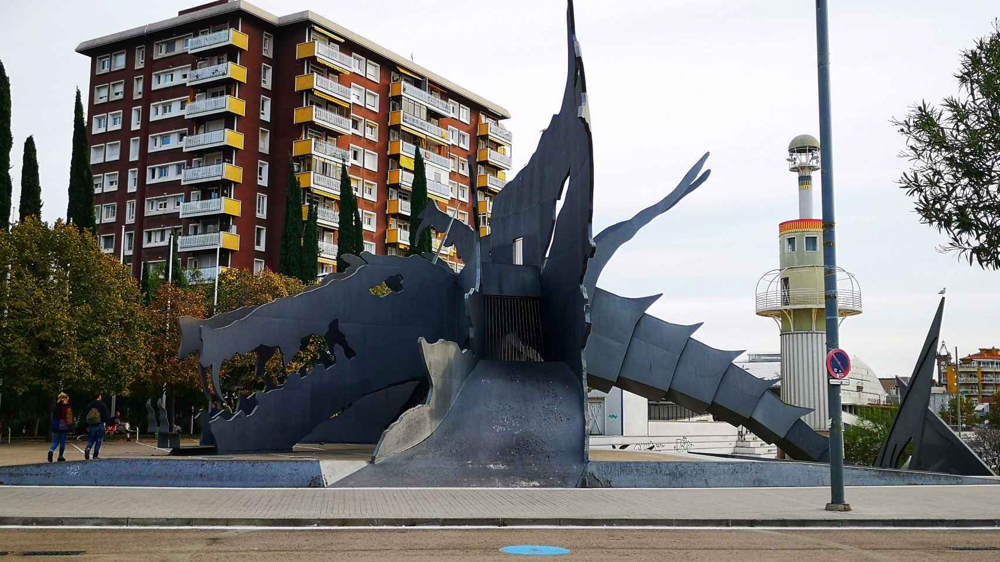
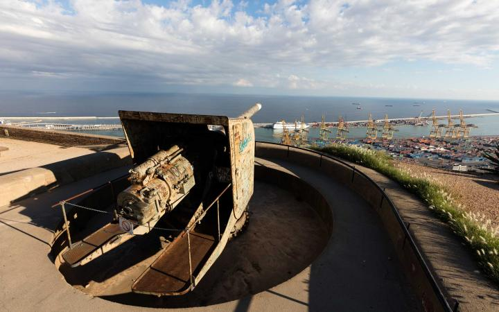
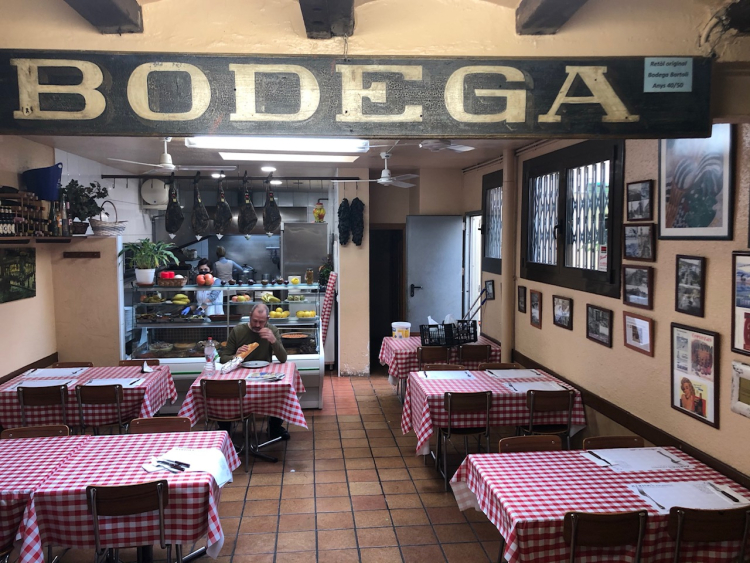
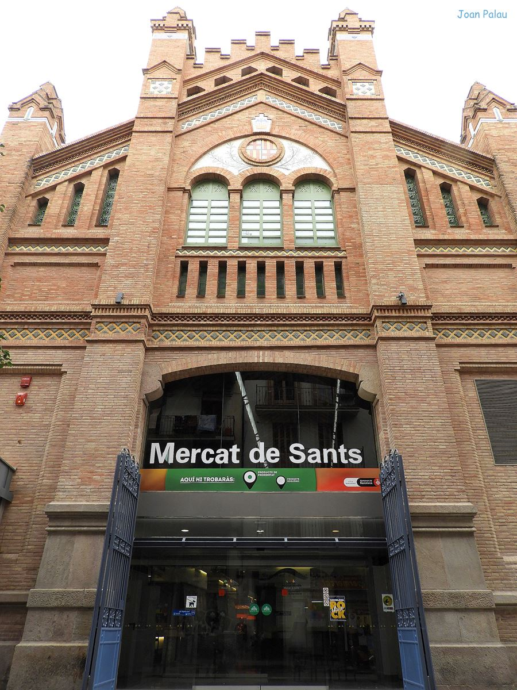

Descubre el alma de Sants-Montjuïc, contado por alguien que lo ha vivido toda la vida
Escrito por: Brigitte Bonett
Fecha: 29 de abril de 2025 | Hora: 14:30
Contacto: ejemplo@gmail.com
Lugares con historia

Dragón de hierro en el Parc de l’Espanya Industrial
Parc de l’Espanya Industrial
De pequeña, el dragón de hierro me parecía una criatura dormida, vigilante de nuestras aventuras. Nos colábamos entre sus patas metálicas, esquivando el agua que rodea el parque como un moat olvidado. Hoy el dragón sigue ahí, oxidado y firme, mientras a su alrededor se pueden ver skaters, pasean familias y los niños siguen conquistando el parque como si fuera un reino secreto.
El Parc de l’Espanya Industrial ocupa el espacio donde estuvo una de las fábricas textiles más grandes y emblemáticas de Barcelona en el siglo XIX. Era el corazón industrial de Sants: una auténtica ciudad dentro de la ciudad, donde se mezclaban humo, telares y vida obrera.
Cuando la fábrica cerró, durante años el espacio quedó casi abandonado, como una herida abierta en el barrio. Hasta que, en 1985, el parque fue diseñado por los arquitectos Luis Peña Ganchegui y Francesc Rius, incorporando elementos que recordaran su pasado industrial: chimeneas, estructuras metálicas, el dragón de hierro.
Con motivo de los Juegos Olímpicos de 1992, el parque se remodeló y se abrió más hacia el barrio, convirtiéndose en uno de los pulmones de Sants. Un lugar para la diversión, el descanso, los encuentros y el sport.
Ubicación
Dirección: Carrer de Muntadas, 1, Sants-Montjuïc, 08014 Barcelona, España
Metro: L3, L5 - Sants Estació

Vista del Castell de Montjuïc con Barcelona al fondo
Castell de Montjuïc
El Castell de Montjuïc siempre tuvo algo de misterioso. Recuerdo que cada vez que llegábamos a la cima, el viento parecía hablarme, trayendo consigo historias de tiempos pasados. Hoy, subo más tranquilo, pero sigo sintiendo la misma magia al mirar desde allí el mar y la ciudad extendida como un mapa.
Este castillo, construido a mediados del siglo XVII como una torre de vigilancia, fue testigo de siglos de historia militar. Fue usado como fortaleza para proteger la ciudad, pero también como prisión durante la Guerra Civil Española y bajo la dictadura de Franco. Durante esos años, se convirtió en un símbolo de represión para muchos, ya que allí fueron encarcelados y fusilados opositores al régimen.
Hoy, sin embargo, el Castell de Montjuïc es un lugar de paz y reflexión, y sus murallas ya no gritan órdenes ni conflictos, sino que invitan a pensar. Desde las alturas, las vistas de Barcelona son impresionantes: el mar, el puerto, la ciudad entera extendida bajo tus pies. Es uno de esos lugares donde la historia se mezcla con la belleza del presente. Y cuando me siento en su terraplén, mirando el horizonte, es fácil imaginar cómo ha cambiado esta ciudad, pero a la vez, lo eterno que sigue siendo.
Ubicación
Dirección: Ctra. de Montjuïc, 66, Sants-Montjuïc, 08038 Barcelona
Metro: L1, L3 - Plaça Espanya
Bus: 150

Interior del Bar Bodega Bartolí con mesas de mármol y vermut
Bar Bodega Bartolí
En el Bodega Bartolí el tiempo parece no pasar. No hay música alta ni platos de diseño, solo vermut servido con hielo y una rodaja de naranja, tapas hechas como las hacía mi abuela, y un murmullo constante de vecinos que se saludan de mesa en mesa. En este bar, la esencia de Sants se puede sentir en cada rincón.
Fundada en 1939, justo después de la Guerra Civil, la Bodega Bartolí fue un refugio en un momento difícil para Barcelona. El barrio, que por entonces aún conservaba mucha de su estructura obrera, necesitaba un lugar donde relajarse, comer bien y hablar sin prisa. Aquí no solo se sirve comida y bebida: se sirve memoria, vivencias de generaciones que han pasado por sus puertas, compartiendo historias sobre la vida en el barrio.
A lo largo de los años, ha sobrevivido a la modernidad y a las olas de cambios urbanos, manteniéndose fiel a sus raíces. Cada tapa de ensaladilla rusa, cada copa de vermut, lleva consigo un pedazo de historia de Sants. Este bar no tiene turistas con cámaras, sino a los de siempre: los que saben que no se trata de un sitio de paso, sino de un rincón donde uno se siente parte de algo más grande.
Es el alma de Sants, un pedazo de su historia, que se ha preservado entre paredes de madera, cartas manuscritas y mesas de mármol gastadas por los años.
Ubicación
Dirección: Carrer del Vallespir, 41, Sants-Montjuïc, 08014 Barcelona
Metro: L3, L5 - Sants Estació

Fachada modernista del Mercat de Sants con estructura de hierro y cristal
Mercado de Sants
Hace 20 años el Mercat de Sants era una cita sagrada de los sábados. Nos agarraban fuerte de la mano para no perdernos entre los puestos rebosantes de frutas, pescado que aún respiraba y pan que crujía solo con mirarlo. Hoy sigue igual, pero el ruido y el bullicio han cambiado un poco: cada vez hay más tusitas, pero los puestos siguen siendo los mismos. Aquí se compra como antes, con calma y mirando a los ojos al que te vende, sabiendo que no solo compras productos, sino historias.
El Mercat de Sants, inaugurado en 1913, es uno de los mercados más antiguos de Barcelona. Diseñado por Pere Falqués, arquitecto modernista que también participó en la creación de otras estructuras emblemáticas de la ciudad, el mercado fue concebido como el centro neurálgico del barrio. En su interior, los vendedores ofrecían productos frescos de los huertos cercanos y los pescadores del puerto, un símbolo de la Barcelona más genuina, la que no olvida sus raíces.
A lo largo de los años, el mercado ha mantenido su estructura modernista de hierro y cristal, siendo testigo de la evolución del barrio. No solo es un lugar de compras, sino un punto de encuentro, una conexión entre generaciones. Aquí las conversaciones sobre las últimas noticias del barrio se mezclan con las risas de los niños que corren entre los puestos. Para mí, el Mercat de Sants es más que un lugar donde hacer la compra: es un espacio donde el tiempo parece detenerse, un refugio que conserva el alma del viejo Sants, pero que también da la bienvenida a los nuevos que llegan.
Ubicación
Dirección: Carrer de Sant Jordi, 6, Sants-Montjuïc, 08028 Barcelona